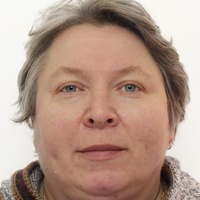

Meet the Team

Dr Olga Bylya
- Research Fellow, National Manufacturing Institute Scotland
Omnia Amin
- PhD Student, National Manufacturing Institute Scotland

Aleksey Reshetov
- University of Strathclyde researcher with technical background in Material Science and FE modelling of Forging interested in applying DtSc and AI/ML tools for manufacturing processes.